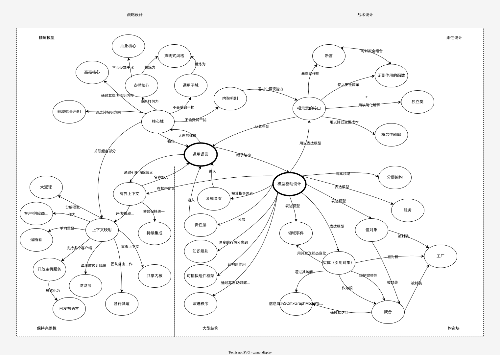

DDD 大全
内容来源于 https://www.domainlanguage.com/ddd/reference/
模式概览

定义
- 领域（domain）：知识、影响或活动的领域。 用户应用程序的主题领域是软件的领域。
- 模型（model）：描述领域的选定方面的抽象系统，可用于解决与该领域相关的问题。
- 通用语言（ubiquitous language）：一种围绕领域模型构建的语言，由所有团队成员在有界上下文中使用，以将团队的所有活动与软件联系起来。
- 上下文（context）：决定其含义的词或语句出现的环境。 关于模型的陈述（Statements）只能在上下文中理解。
- 有界上下文（bounded context）：定义和适用特定模型的边界（通常是子系统或特定团队的工作）的描述。
I. 在工作中使用模型
限界上下文 (Bounded Context)
通用语言(Ubiquitous Language)
持续集成（Continuous Integration）
模型驱动设计 （Model-Driven-Design）
亲身实践的建模者（Hands-On Modeler）
II. 模型驱动设计的构造块
根据领域驱动设计，这些模式铸造了广泛持有的面向对象设计的最佳实践。它们指导决策以澄清模型并保持模型和实现相互一致，从而增强彼此的有效性。精心设计各个模型元素的细节为开发人员提供了一个稳定的平台，可以从中探索模型并使其与实现保持密切联系。
分层架构
在面向对象的程序中，UI、数据库和其他支持代码通常直接写入业务对象中。额外的业务逻辑嵌入在 UI 小部件和数据库脚本的行为中。发生这种情况是因为从短期来看，这是让事情顺利进行的最简单方法。 当与领域相关的代码通过如此大量的其他代码传播时，就变得非常难以查看和推理。对 UI 的表面更改实际上可以改变业务逻辑。要更改业务规则，可能需要仔细跟踪 UI 代码、数据库代码或其他程序元素。实现连贯的、模型驱动的对象变得不切实际。自动化测试很尴尬。由于每个活动都涉及所有技术和逻辑，因此程序必须保持非常简单，否则将变得无法理解。 所以： 隔离领域模型的表达和业务逻辑，消除对基础设施、用户界面甚至不是业务逻辑的应用程序逻辑的任何依赖。将复杂的程序划分为多个层。在每一层内开发一个具有凝聚力且仅取决于下面各层的设计。遵循标准架构模式为上面的层提供松散耦合。将与领域模型相关的所有代码集中在一层，并将其与用户界面、应用程序和基础设施代码隔离开来。域对象无需承担显示自身、存储自身、管理应用程序任务等的责任，可以专注于表达域模型。这允许模型发展到足够丰富和清晰，以捕获基本的业务知识并将其投入使用。 这里的关键目标是隔离。相关模式，例如“六边形架构”，在允许我们的领域模型表达式避免依赖和引用其他系统关注点的程度上，可能会起到同样或更好的作用。
实体（引用对象）
值对象
领域事件
服务
模块
每个人都使用模块，但很少有人将它们视为模型的成熟部分。代码被分解为各种类别，从技术架构的各个方面到开发人员的工作分配。即使是经常重构的开发人员也倾向于满足于在项目早期构思的模块。 耦合和内聚的解释往往使它们听起来像技术指标，需要根据关联和交互的分布进行机械判断。然而，不仅仅是代码被划分为模块，还有概念。一个人一次可以思考多少事情是有限制的（因此耦合度很低）。不连贯的想法片段就像未分化的想法汤一样难以理解（因此具有高凝聚力）。
所以： 选择能够讲述系统故事并包含一组连贯概念的模块。给出成为通用语言一部分的模块名称。模块是模型的一部分，它们的名称应该反映对领域的洞察力。 这通常会在模块之间产生低耦合，但如果它没有寻找一种方法来改变模型以解开概念，或者一个被忽视的概念可能是一个模块的基础，它将以一种有意义的方式将元素组合在一起。在可以独立理解和推理的概念意义上寻求低耦合。细化模型，直到它根据高级域概念进行分区并且相应的代码也被解耦。 （又名包）
聚合
信息库
工厂
III. 柔性设计
让一个项目随着开发的进行而加速——而不是被它自己的遗产所拖累——需要一个令人愉快的设计，并引入改变，即柔性设计。 柔性设计是对深度建模的补充。 开发人员扮演两个角色，每个角色都必须由设计服务。同一个人很可能同时扮演这两个角色——甚至在几分钟内来回切换——但与代码的关系仍然不同。一个角色是客户的开发人员，他们利用设计的能力将领域对象编织到应用程序代码或其他领域层代码中。灵活的设计揭示了一个深刻的潜在模型，使其潜力清晰。客户端开发人员可以灵活地使用一组最小的松散耦合概念来表达领域中的一系列场景。设计元素以自然的方式组合在一起，结果可预测、特征清晰且稳健。 同样重要的是，设计必须为致力于改变它的开发人员服务。要对变化持开放态度，设计必须易于理解，揭示客户开发人员正在使用的相同底层模型。它必须遵循域的深层模型的轮廓，因此大多数更改都会在灵活点处弯曲设计。其代码的效果必须是透明的，因此更改的后果将很容易预测。 • 使行为明显 • 降低变革成本 • 培养与之合作的软件开发人员
揭示意图的接口
如果开发人员必须了解组件的实现才能使用它，那么封装的价值就丧失了。 如果原始开发人员以外的其他人必须根据其实现来推断对象或操作的目的，那么新开发人员可能会推断出操作或类只能偶然实现的目的。 如果这不是本意，那么代码可能暂时可以工作，但设计的概念基础将被破坏，两个开发人员将在不同的目的上工作。
所以：
命名类和操作以描述它们的效果和目的，而不参考它们履行承诺的方式。 这使客户开发人员无需了解内部结构。 这些名称应符合通用语言，以便团队成员可以快速推断其含义。 在创建行为之前为其编写测试，以强制您进入客户端开发者模式。
无副作用的函数(Side-Effect-Free Functions)
多个规则或计算组合的相互作用变得极难预测。调用操作的开发人员必须了解其实现及其所有委托的实现，才能预测结果。如果开发人员被迫揭开面纱，那么任何接口抽象的用处都会受到限制。如果没有安全可预测的抽象，开发人员必须限制组合爆炸(combinatory explosion)，对可构建的行为的丰富性设置一个较低的上限。
所以：
将尽可能多的程序逻辑放入函数中，即返回结果且没有明显副作用的操作。将命令（导致修改可观察状态的方法）严格隔离为不返回域信息的非常简单的操作。当适合职责的概念出现时，通过将复杂的逻辑移动到值对象中来进一步控制副作用。
值对象的所有操作都应该是无副作用的函数。
断言
独立类(Stand Alone Class)
即使在一个模块中，随着依赖项的添加，解释设计的难度也会大大增加。 这增加了精神负担，限制了开发人员可以处理的设计复杂性。 隐式概念对这种负载的贡献甚至超过了显式引用。 低耦合是对象设计的基础。 如果可以，请一路走下去。 从图片中消除所有其他概念。 然后这个类将完全独立，可以单独学习和理解。 每个这样的自包含类都显着减轻了理解模块的负担。
封闭的操作
声明式设计
借鉴既定的形式主义
从头开始创建一个紧密的概念框架是您每天都无法做到的。 有时，您会在项目的整个生命周期中发现并完善其中之一。 但是您通常可以使用和调整在您的领域或其他领域中长期建立的概念系统，其中一些已经经过几个世纪的提炼和提炼。 例如，许多业务应用程序都涉及会计。 会计定义了一套完善的实体和规则，可以轻松适应深度模型和灵活的设计。 有很多这样形式化的概念框架，但我个人最喜欢的是数学。 令人惊讶的是，在基本算术上进行一些扭曲是多么有用。 许多领域都在某处包括数学。 寻找它。 挖出来。 专业数学很干净，可以通过明确的规则组合，人们发现它很容易理解。
在本书的第 8 章“领域驱动设计”中讨论了一个真实世界的示例“共享数学”。
概念轮廓
有时人们会精细地切割功能以允许灵活组合。有时，他们将其混为一谈以封装复杂性。有时他们寻求一致的粒度，使所有类和操作都具有相似的规模。这些过于简单化，不能像一般规则那样运作良好。但他们的动机是基本问题。
当模型或设计的元素嵌入到一个整体结构中时，它们的功能就会被复制。外部接口并没有说明客户可能关心的一切。它们的含义很难理解，因为不同的概念混合在一起。 相反，分解类和方法会使客户端变得毫无意义地复杂化，迫使客户端对象了解小块是如何组合在一起的。更糟糕的是，一个概念可能会完全丢失。铀原子的一半不是铀。当然，重要的不仅仅是晶粒大小，而是晶粒运行的地方。
所以：
考虑到您对领域中重要部门的直觉，将设计元素（操作、接口、类和聚合）分解为有凝聚力的单元。通过连续重构观察变化和稳定性的轴，并寻找解释这些剪切模式的潜在概念轮廓。使模型与领域的一致方面保持一致，使其首先成为可行的知识领域。
基于深度模型的灵活设计产生了一组简单的接口，这些接口在逻辑上结合起来以通用语言做出明智的陈述，并且没有不相关选项的干扰和维护负担。
IV. 战略设计的上下文映射
大泥球 *
当我们调查现有的软件系统，试图了解不同的模型是如何在定义的边界内应用时，我们发现系统的某些部分，通常是大型系统，其中模型混合在一起并且边界不一致。 在没有边界的系统中，试图描述模型的上下文边界很容易陷入困境。 明确定义的上下文边界仅作为智力选择和社会力量的结果出现（即使创建系统的人当时可能并不总是有意识地意识到这些原因）。当这些因素不存在或消失时，多个概念系统混合在一起，使定义和规则变得模棱两可或相互矛盾。随着功能的添加，这些系统由或有逻辑工作。依赖关系在软件中交叉。因果关系变得越来越难以追踪。最终，软件凝结成一个大泥球。 在某些情况下，大泥球实际上非常实用（如 Foote 和 Yoder 的原始文章中所述），但它几乎完全阻止了有用模型所需的微妙性和精确性。
因此：
在整个烂摊子周围画一个边界，并将其指定为一个大泥球。不要试图在这种情况下应用复杂的建模。警惕此类系统蔓延到其他环境的趋势。 （见 http://www.laputan.org/mud/mud.html。Brian Foote 和 Joseph Yoder）
V. 战略设计精华
VI. 战略设计的大规模结构
演进秩序
自由设计会产生没有人能理解的整体系统，而且它们很难维护。但是架构可以用预先设计假设来束缚一个项目，并从应用程序特定部分的开发人员/设计人员那里夺走太多的权力。很快，开发者就会将应用程序简化以适应结构，或者他们会颠覆它，完全没有结构，从而带回开发不协调的问题。
所以：
让这种概念性的大规模结构随着应用程序的发展而发展，可能会在此过程中变成完全不同类型的结构。不要过度限制必须使用详细知识做出的详细设计和模型决策。 当可以找到一种结构可以极大地阐明系统而又不会对模型开发造成不自然的约束时，应该应用大规模结构。因为一个不合适的结构比没有更糟糕，所以最好不要追求全面性，而是找到一个最小的集合来解决已经出现的问题。少即是多。
以下是在某些项目中出现并代表这种模式的一组四种特定的大型结构模式。
系统隐喻
隐喻思维在软件开发中无处不在，尤其是模型。但是“隐喻”的极限编程实践已经开始意味着使用隐喻为整个系统的开发带来秩序的特定方式。 软件设计往往非常抽象且难以掌握。开发人员和用户都需要切实的方式来理解系统并共享整个系统的视图。
所以： 当一个具体的系统类比出现并抓住团队成员的想象力并似乎将思维引导到一个有用的方向时，将其作为一个大型结构采用。围绕这个隐喻组织设计，并将其吸收到无处不在的语言中。系统隐喻既应促进有关系统的交流，又应指导系统的开发。这增加了系统不同部分的一致性，甚至可能跨越不同的有界上下文。但是因为所有的隐喻都是不准确的，所以不断地重新审视这个隐喻是否过度扩张或不恰当，如果它妨碍了它，就要准备好放弃它。